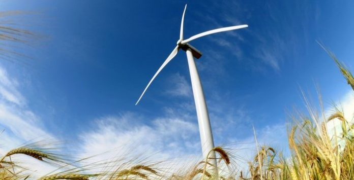
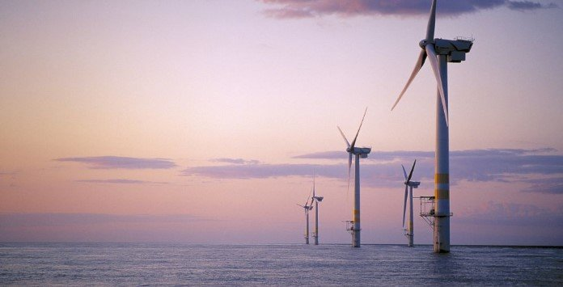

Energia Eólica

A energia eólica diz respeito à transformação da energia do vento em energia útil, é uma forma de obter energia de forma renovável e limpa, uma vez que, não produz poluentes.
A energia eólica é uma fonte de energia que está permanentemente ao dispor do Homem.
O vento consiste num fluxo de gases em grande escala, proporcionando variações significativas ao longo do ano. Este movimento do ar em decorrência do aquecimento irregular da atmosfera pela radiação solar pode ser transformado em energia útil.
Este processo é conhecido como energia eólica e é usado para produzir energia mecânica através de moinhos de vento, produzir eletricidade ou impulsionar os veleiros através de velas. A energia eólica é renovável, limpa e é uma alternativa aos combustíveis fósseis, estando permanentemente disponível em qualquer região no Mundo.
A energia eólica “surgiu” com a crise do petróleo, nos anos 70. Um pouco por toda a Europa foi-se sentindo medo devido à escassez do petróleo, o que levou a procurar outras fontes de energia. No entanto, a origem da energia eólica não se situa exatamente na década de 70.
A origem da energia eólica é muito mais remota. Desde a antiguidade que se percebeu a força do vento. O vento era aproveitado nos barcos que se moviam impulsionados por este através de velas.
Os próprios moinhos trabalhavam graças à força do vento. Bombear água ou moer grãos para obter farinha eram conseguidos graças à energia do vento.
Como funciona a energia eólica?
A energia do vento é transformada em energia elétrica através de um equipamento chamado turbina eólica (ou aerogerador), os quais incluem hélices que se movimentam com a velocidade do vento.
Um sistema eólico pode ser usado em três sistemas diferentes:
- Sistema isolado: sistemas que se encontram privados de energia elétrica proveniente da rede pública, sendo utilizados para abastecer certas regiões
- Sistema híbrido: sistemas que produzem energia elétrica em simultâneo com mais de uma fonte, nomeadamente painéis fotovoltaicos ou turbinas eólicas
- Sistema interligado à rede: sistemas que inserem a energia produzida por eles mesmos na rede elétrica pública
A energia do vento pode, portanto, ser aproveitada e transformada em energia elétrica e mecânica.
Hoje em dia, a energia do vento é essencialmente aproveitada para produzir eletricidade. Esta transformação é conseguida através de aerogeradores. Os aerogeradores são colocados estrategicamente em zonas ventosas, que normalmente são em zonas de maior altitude.
O vento forte é capaz de rodar as pás de uma turbina. Um aerogerador comunica com um eixo central e este, por sua vez, é acoplado a uma caixa multiplicadora (Gearbox) onde a velocidade de rotação é incrementada, segundo características específicas de cada fabricante.
Os aerogeradores possuem um sistema capaz de controlar a velocidade do rotor de forma a manter uma velocidade estável com a variação da velocidade do vento. os mais elevados e for demasiado forte, impede a rotação muito rápida do aerogerador. O gerador ligado ao transmissor mecânico produz energia elétrica.
Uma concentração ou aglomerado de aerogeradores denomina-se de parque eólico, sendo utilizados para produzir energia elétrica, geralmente para alimentar localidades remotas e distantes da rede de transmissão.
Existem dois tipos de parques eólicos, onshore e offshore, os parques eólicos onshore encontram-se localizados em terra ao largo da costa marítima ou no interior. Veja quais são os maiores parques eólicos onshore na Europa.
Os parques eólicos offshore são parques onde os aerogeradores são instalados no mar. Conheça o maior parque offshore do mundo.
Energia eólica no Brasil
O Brasil apresenta uma grande potencial eólico, sobretudo nas regiões sudeste, nordeste e sul do país. Infelizmente, o aproveitamento do seu potencial é pequeno, mas representa uma importante fonte de complementação à energia hidroelétrica, da qual o Brasil é fortemente dependente.
Com a criação do Programa de Incentivo às Fontes Alternativas de Energia Elétrica (Proinfa) em 2002, o setor elétrico no Brasil apresentou um rápido crescimento. Este incentivo proporcionou a instalação de novos geradores em diversas locais e, no final de 2006, o país já tinha uma capacidade de produção de 237 MW.
No ano 2013, o Brasil encontrava-se na 13ª posição no ranking dos países com maior produção de energia eólica, tendo obtido uma capacidade de 1000 MW em 2011, suficiente para abastecer 400 mil habitações.
A grande expetativa no Brasil é que, em 2020, possam ser extraídos cerca de 20 GW.
Sobre as vantagens e desvantagens da energia eólica
Um dos grandes inconveniente a apontar à energia eólica é a poluição sonora. As turbinas não são de todo silenciosas e o desconforto pode fazer-se sentir, mesmo a grandes distâncias. Mas até esta desvantagem está a ser minimizada pela tecnologia, com uma diminuição do ruído provocado pelos aerogeradores de última geração.
A poluição visual é uma outra desvantagem apontada apenas por alguns. Não é portanto um ponto unânime. Há quem considere que um parque eólico tem grande impacto visual e há quem não considere.
Vantagens da energia eólica
- Diminuição da dependência de combustíveis fósseis
- Redução da emissão de dióxido de carbono na atmosfera
- É inesgotável
- Ótima rentabilidade de investimento (em cerca de 6 meses recupera a energia gasta com a instalação e manutenção)
- Geração de emprego nas regiões
Desvantagens da energia eólica
- Poluição visual, visto que parques eólicos são instalados em áreas livres para aproveitar da melhor forma os ventos
- Poluição sonora proveniente do funcionamento dos equipamentos pode ser perturbador para a população local
- Impatos sobre a fauna, nomeadamente a colisão de morcegos e aves
- Variações signitificativas da velocidade do vento ao longo do ano, ou seja, nem sempre o vento sopra quando a eletricidade é necessária em determinado local
Perante as metas ambientais traçadas para cada país são cada vez mais os países que apostam em energias renováveis, sendo a eólica alvo de grande atenção. Esta forma de energia renovável apresenta um crescimento superior a 25% por ano, a nível global.
Mas não é só a Europa que aposta na energia eólica. São mais de 80 países que contam já com a energia do vento para produzir parte da eletricidade de cada nação.